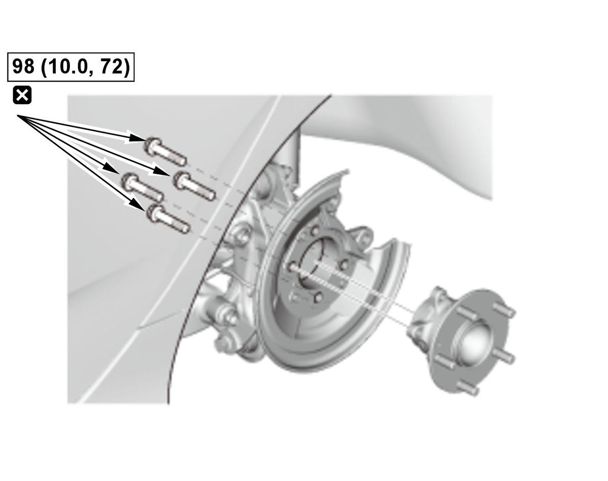
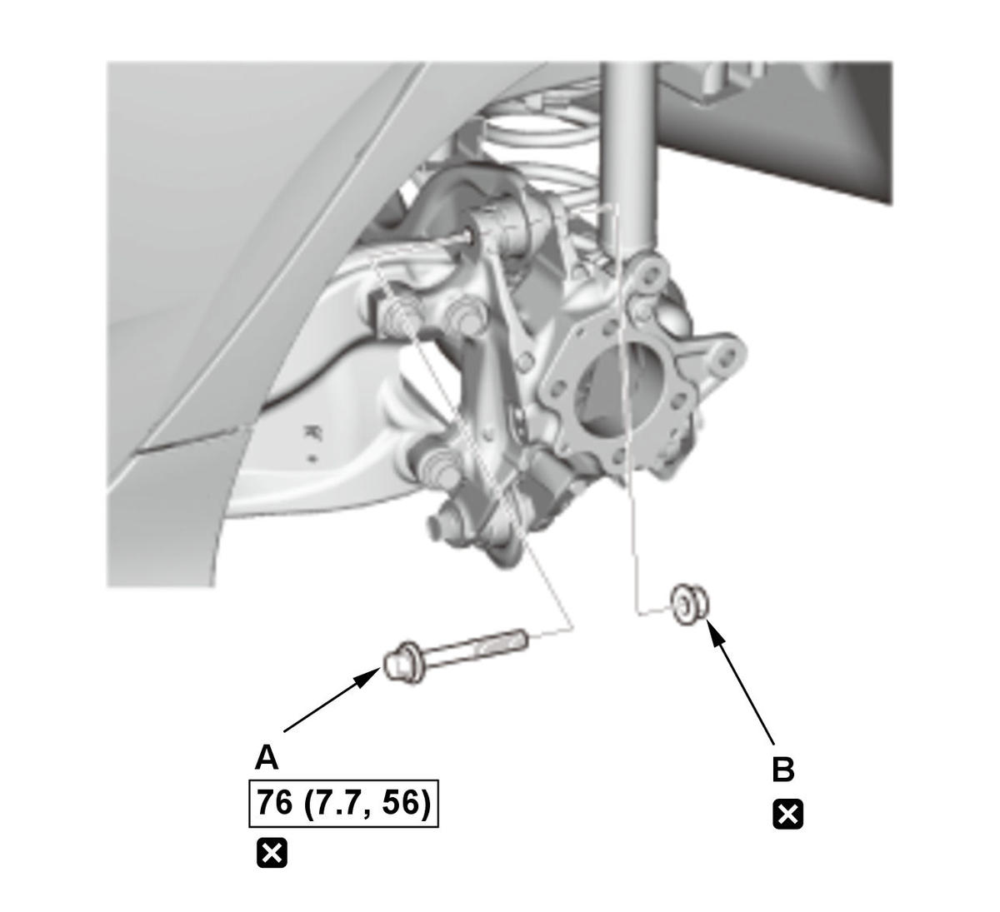
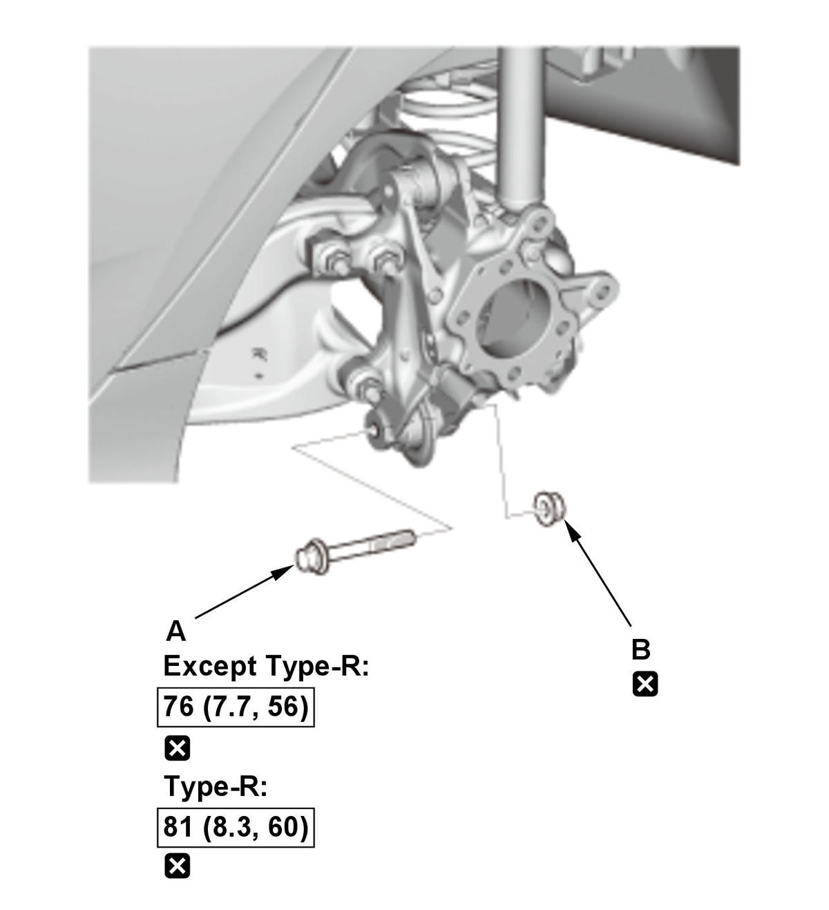
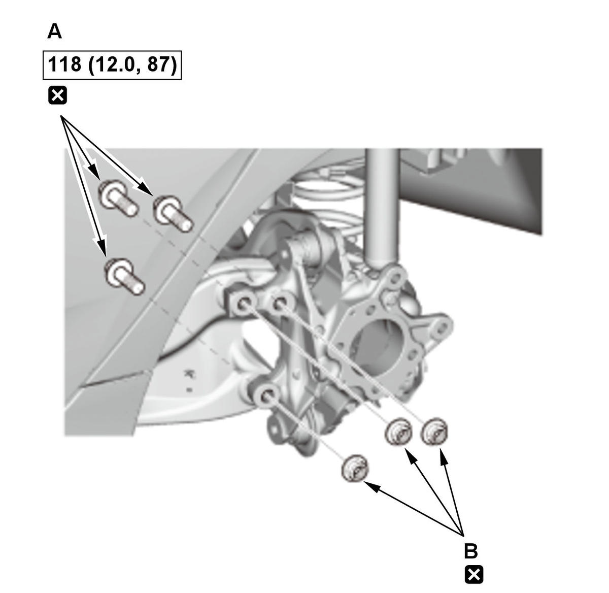
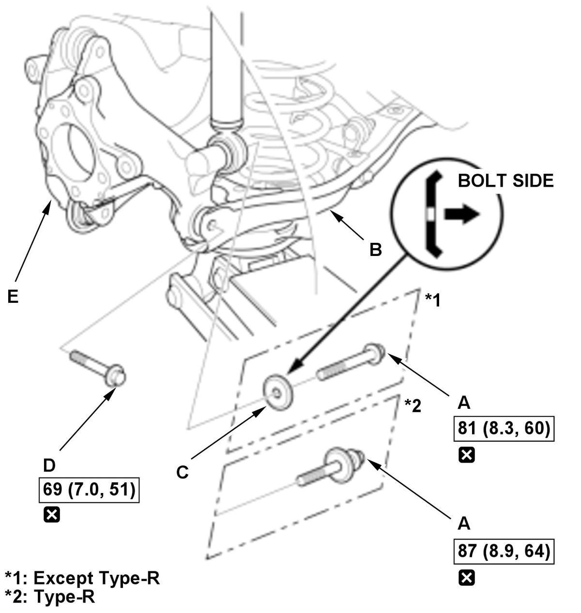

Removal and Installation
NOTE:
- How to read the torque specifications .
- Refer to the Exploded View as needed during the following procedures.
- Unless otherwise indicated, illustrations used in the procedure are for 2/4-door without adaptive damper system.
Hub Bearing Unit
- Vehicle - Lift
- Rear Wheel - Remove
- Brake Hose Bracket Mounting Bolt - Remove
- Brake Caliper - Remove
1. Remove the caliper assembly without disconnecting the brake hose from the caliper body . - Rear Brake Disc - Remove
- Hub Bearing Unit - Remove

Courtesy of HONDA, U.S.A., INC.NOTE:
- Keep the wheel bearing/encoder away from any magnetic field. The encoder can be damaged or erased.
- Use the new mounting bolts during reassembly.
- Hub Bearing Unit for Damage and Cracks - Check
- All Removed Parts - Install
1. Install the parts in the reverse order of removal. - Wheel Alignment - Check
Knuckle
- Hub Bearing Unit - Remove
- Splash Guard - Remove
- Wheel Speed Sensor - Remove
- Knuckle - Remove

Courtesy of HONDA, U.S.A., INC.1. Remove the upper arm mounting bolt (A) and nut (B).
NOTE: Use the new mounting bolt and nut during reassembly.
Courtesy of HONDA, U.S.A., INC.2. Remove lower arm A mounting bolt (A) and nut (B).
NOTE: Use the new mounting bolt and nut during reassembly.
Courtesy of HONDA, U.S.A., INC.3. Remove the trailing arm mounting bolts (A) and nuts (B).
NOTE: Use the new mounting bolts and nuts during reassembly.
Courtesy of HONDA, U.S.A., INC.4. Position a floor jack under lower arm B. 5. Remove the damper lower mounting bolt (A) and the washer (except Type-R) (C).
NOTE: Use a new mounting bolt during reassembly.
6. Remove lower arm B mounting bolt (D).
NOTE: Use a new mounting bolt during reassembly.
7. Remove the knuckle (E).
NOTE: Loosely install nuts and/or bolts to install the bushings, load the suspension with the vehicle's weight, and then tighten the nuts and/or bolts to the specified torque.
- All Removed Parts - Install
1. Install the parts in the reverse order of removal. - Wheel Alignment - Check